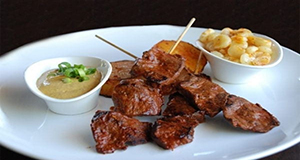

Anticucho
Contexto Histórico
Se popularizou na época colonial, a partir de uma adaptação dos escravos negros que foram levados ao Peru; estes criaram um tipo especial de espetinho, feito com as vísceras (especificamente o coração) que seus donos espanhóis descartavam.

Ingredientes:
Coração de boi fresco;
2 dentes de alho por quilo de carne;
Uma colher de sopa de sal por quilo de carne (diminuir, se o alho já estiver salgado);
100ml de óleo por quilo;
Uma colher bem cheia por quilo de Aji Panca, mas depende do gosto ou da ardência do molho;
Uns 150 ml de vinagre por kg de carne. Deve-se acrescentar mais vinagre no caldo que vai molhar os espetos na hora de assa
MODO DE PREPARO:
Colocar os espetinhos de madeira, preferivelmente de bambu, de molho na água na noite anterior, isto evita queimar os espetos quando estiverem no fogo. O ideal é que o coração seja preparando um dia antes e fique marinando no tempero, sem sal, até o dia seguinte;
Com uma faca muito bem afiada, retire todo sebo, gordura e veias do coração. Esta operação é importantíssima, tem que ficar bem limpo;
Com a faca inclinada cortar os pedaços de coração em pequenos bifes. Lembre-se que tem que espetar bife, não podendo este ser muito fino nem muito grosso;
O sal deve ser acrescentado umas duas horas antes de assar;
Enfiar a carne nos espetos e reservar o caldo que vai sobrar, acrescentando mais vinagre óleo ao caldo, o que servirá para dar o sabor e criar uma fumaça enquanto estiver assando. Esta fumaça dá o cheiro e sabor característico do Anticucho;
Confeccionar uma broxa de palha de milho para aspergir no caldo sobre os espetinhos quando tiver assando;
Quando a churrasqueira estiver a 200 graus aproximadamente (aquele ponto que você não consegue manter a mão perto da grelha de tão quente), passe um pouco do caldo nosespetinhos e coloque para assar. Deixe até assar de um lado, vire e passe mais caldo por cima.
Ao aspergir o caldo pode dar um pouco de fogo, isto é bom, mas o fogo não pode durar muito para não queimar a carne.
Quando estiver levemente sapecado de cada lado está pronto para sair. Dê mais uma aspergida e sirva. Ele deve ficar sapecado por fora e suculento por dentro. Deve ser consumido ainda quente.
Você pode corrigir o sal no molho.
Acompanhamento:
Acompanha milho cozido ou batata;
Um molho feito de aji verde (frutos do amarillo ou panca ainda verdes), batidos com queijo canastra, azeite, sal, gotas de limão e um pouquinho de vinagre, como um patê